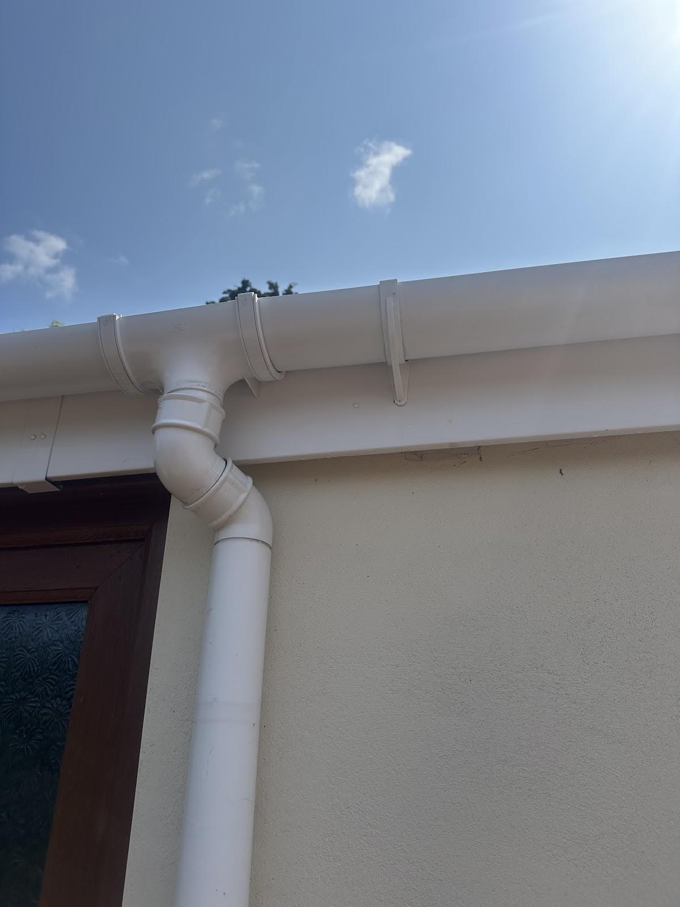
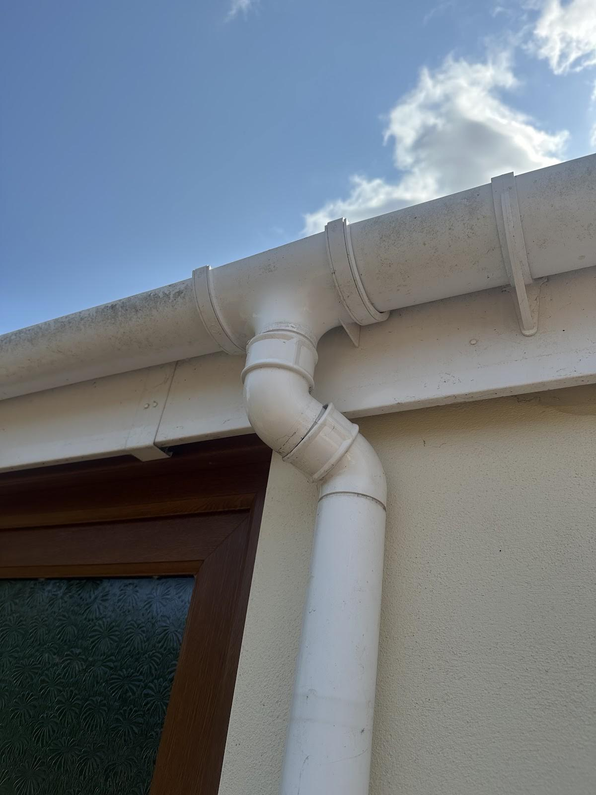
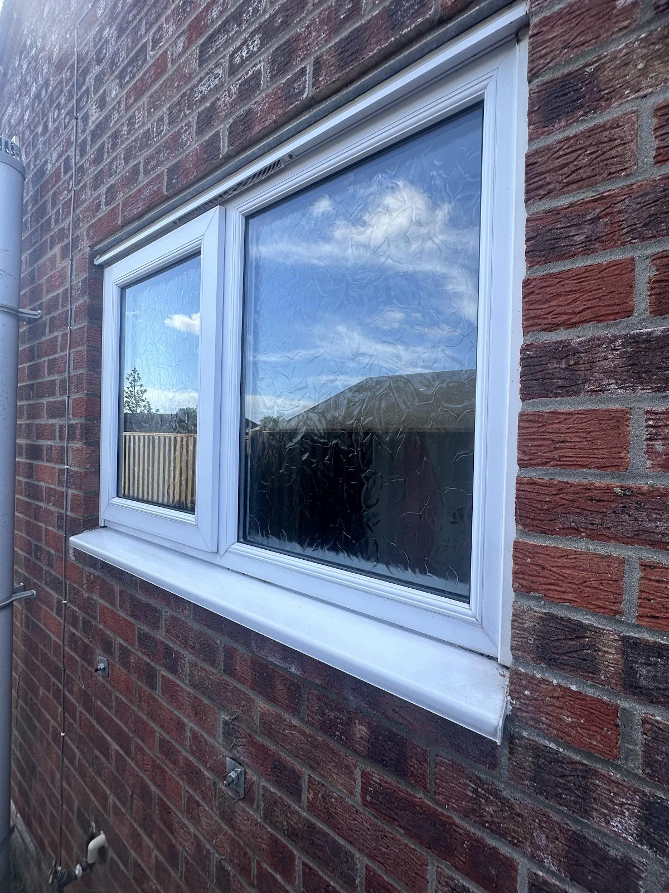
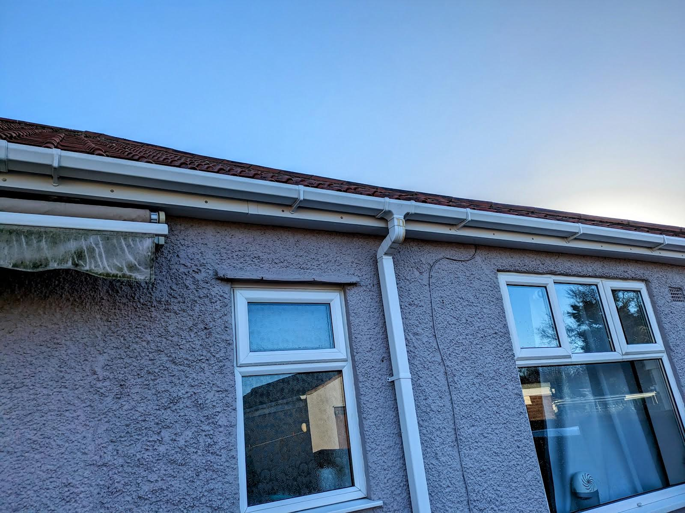
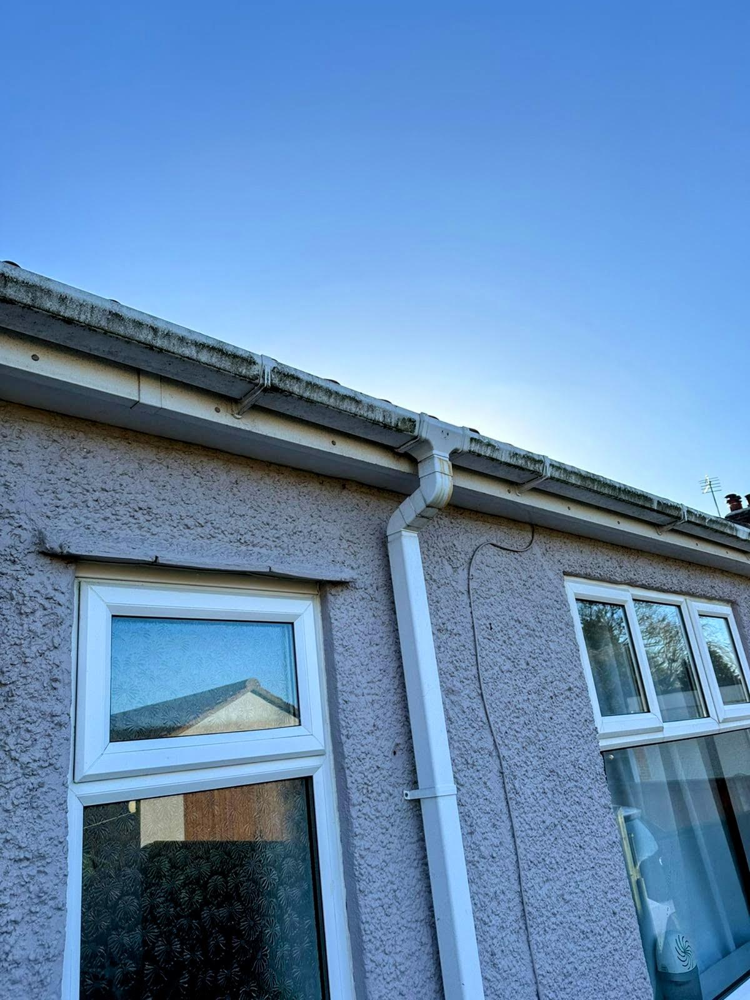
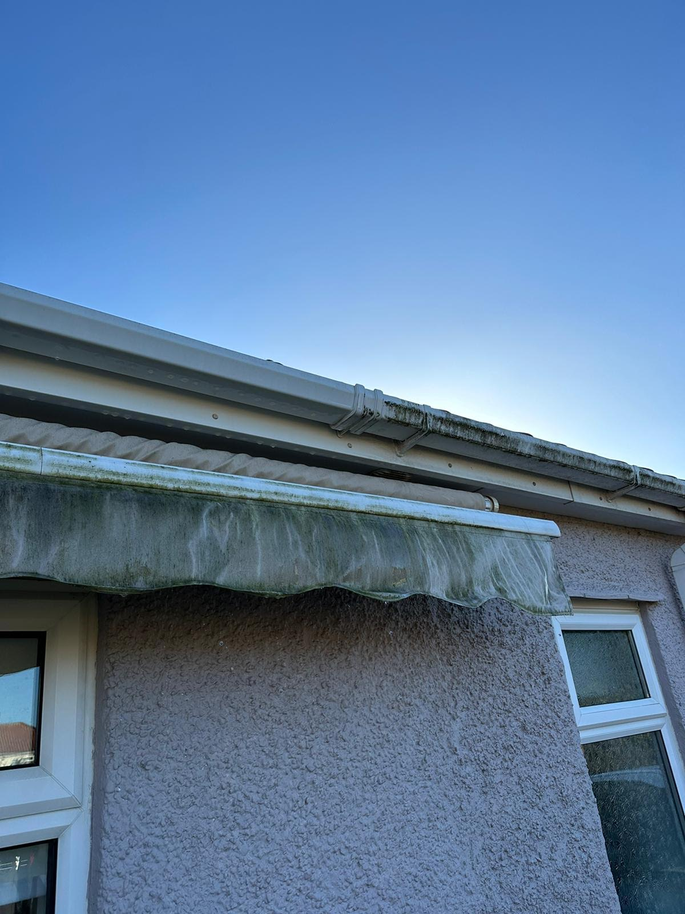
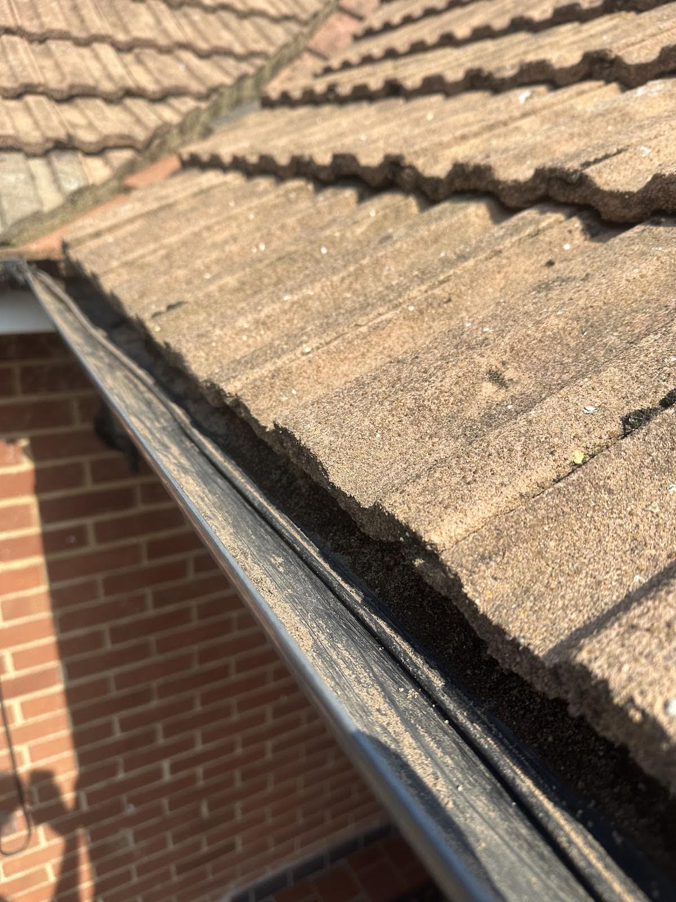
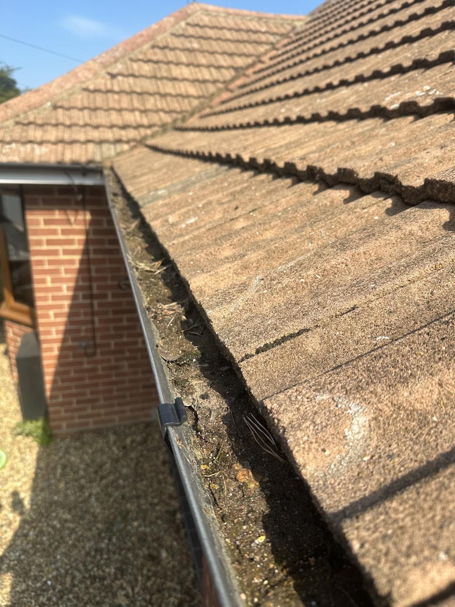

After
BeforeNo. 01 Gutter & downpipe, back to white

Fig. 01 · Window & sillWindow cleaner · Norwich
Norwich windows and gutters, left gleaming white.

After
BeforeNo. 01 Gutter & downpipe, back to white

After
BeforeNo. 02 Bungalow fascia & gutters

Before“My windows were going green before Sam came. Now they are all clean…”
 After
After
 Before
Before
No. 03 Gutter line below the chimney

After
BeforeNo. 04 Clogged gutter, cleared out